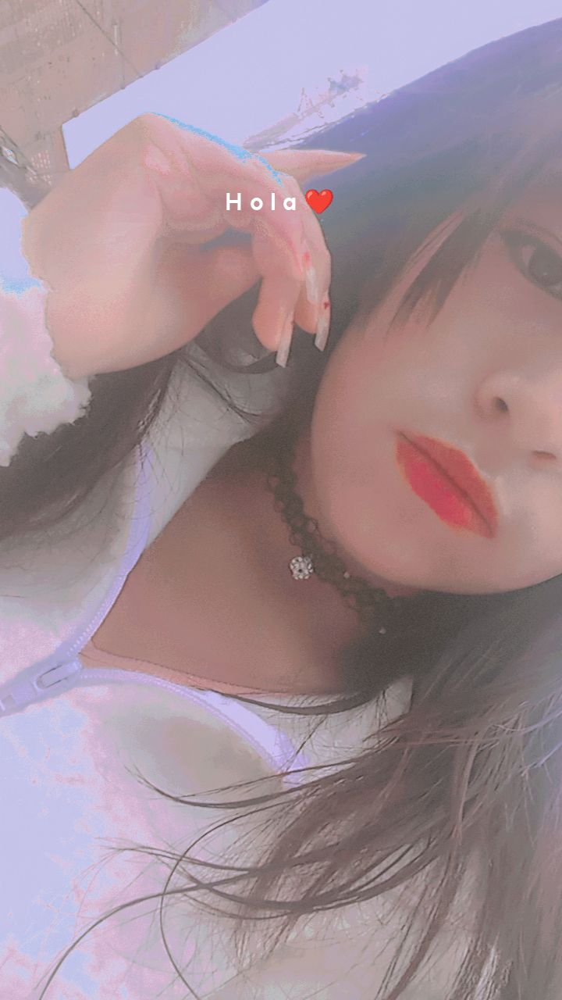
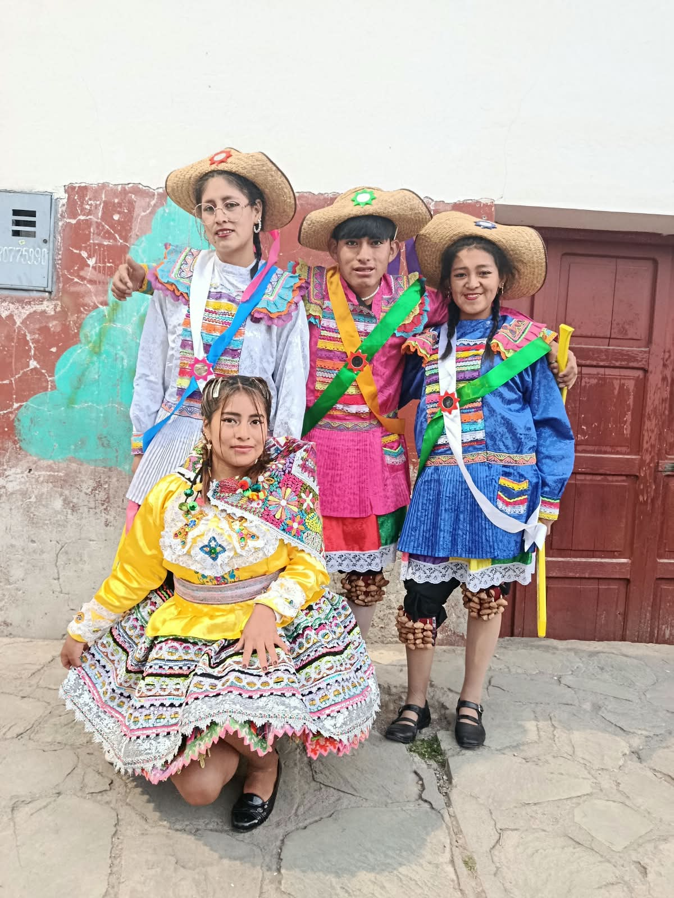
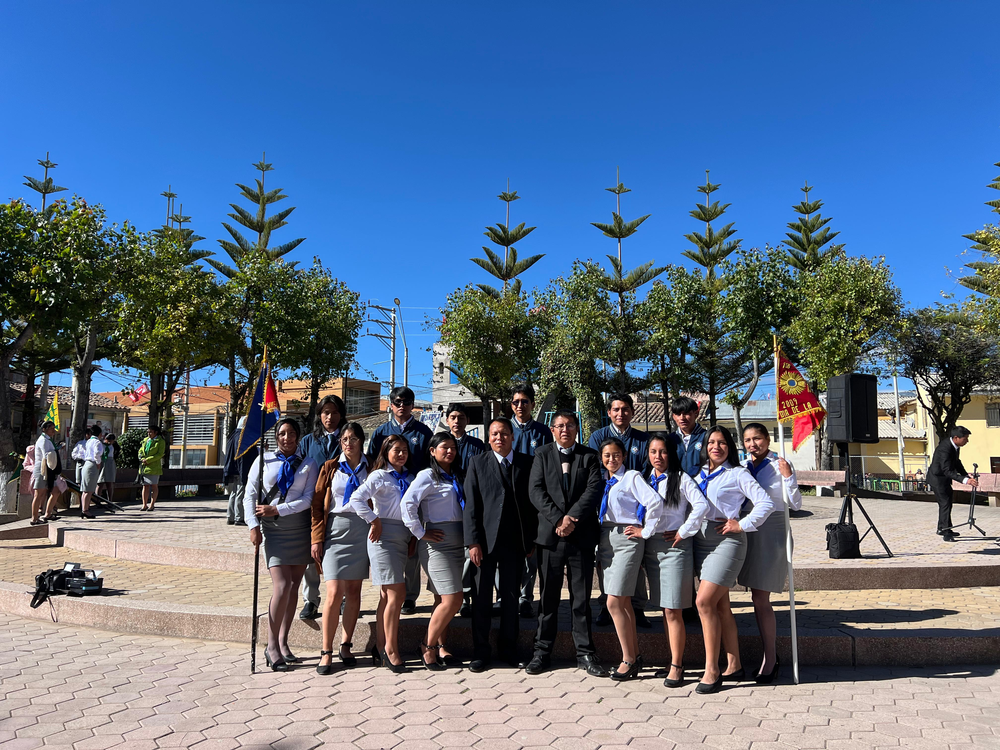
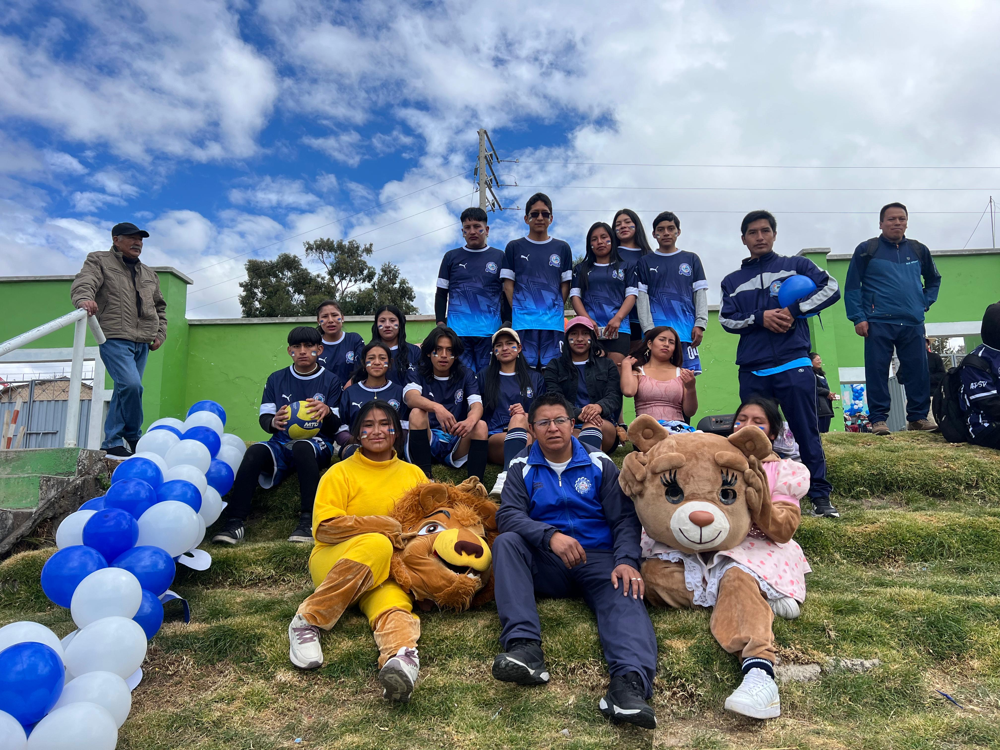
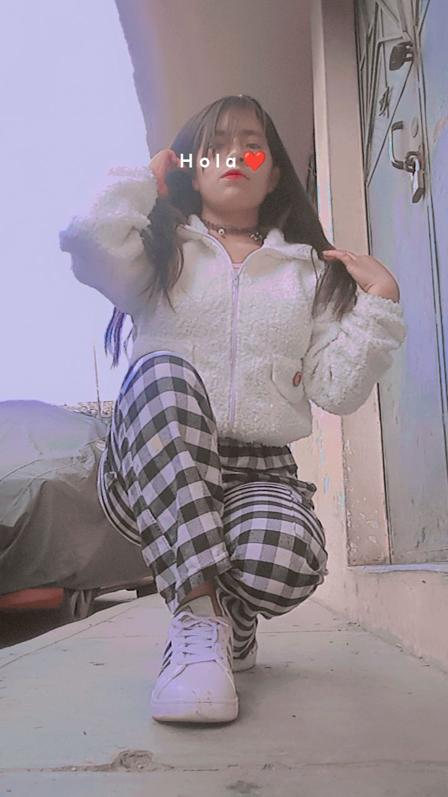

✨ BIENVENIDOS A MI PÁGINA PERSONAL
Hola, soy Roxana Taipe
Estudiante de Tecnología de la Información
Soy una persona responsable, perseverante y con muchas ganas de aprender. Me gusta la tecnología, descubrir nuevas ideas y adquirir conocimientos que me ayuden a crecer tanto personal como profesionalmente. Esta página representa una parte de mi historia, mis sueños y mis metas.

Sobre mí
Un poquito de mi vida, mi personalidad y mis sueños.

¡Hola! Soy Roxana 💜
Mi nombre es Mery Roxana Taipe Reymundo. Soy estudiante de la carrera profesional de Arquitectura de Plataformas y Servicios de Tecnologías de la Información en el Instituto de Educación Superior Tecnológico Público Manuel Scorza Torre, ubicado en Acobamba, Huancavelica.
Me considero una persona responsable, perseverante y creativa. Me gusta aprender cosas nuevas, especialmente relacionadas con la tecnología y la informática. Siempre trato de mejorar mis conocimientos y superar los desafíos que se presentan.
Mi familia es una parte muy importante de mi vida, porque representa mi apoyo y motivación para continuar estudiando y luchar por mis sueños. Deseo terminar mi carrera, convertirme en una buena profesional y construir un futuro mejor.
Mi Formación
Preparándome para alcanzar mis sueños profesionales.
Mi Instituto
Instituto de Educación Superior Tecnológico Público Manuel Scorza Torre, Acobamba - Huancavelica.
Mi centro de formaciónMi Carrera
Arquitectura de Plataformas y Servicios de Tecnologías de la Información.
Mi preparación profesionalMis Aprendizajes
Desarrollo de conocimientos en programación, diseño web, bases de datos y herramientas tecnológicas.
Aprender para crecerMis Habilidades
Cualidades que me ayudan a mejorar cada día.
Creatividad
Me gusta aportar ideas nuevas y buscar soluciones diferentes a los problemas.
Responsabilidad
Me esfuerzo por cumplir mis actividades y compromisos con dedicación.
Perseverancia
No me rindo fácilmente y continúo trabajando para conseguir mis objetivos.
Programación
Me interesa aprender lenguajes de programación y desarrollar páginas y aplicaciones web.
Trabajo en equipo
Me gusta compartir ideas, colaborar y aprender de las experiencias de otras personas.
Aprendizaje
Tengo deseos de superación y disposición para adquirir nuevos conocimientos.
Mis Metas y Sueños
Cada objetivo representa un paso hacia el futuro que deseo construir.
Mis Intereses
Actividades y temas que forman parte de mi vida.
La Danza
Me gusta bailar porque puedo expresar mis sentimientos, disfrutar de la música y conocer nuestras tradiciones.
La Tecnología
Me interesa descubrir nuevas herramientas digitales y aprender sobre el mundo de la informática.
Aprender cosas nuevas
Disfruto adquirir conocimientos y vivir experiencias que contribuyan a mi crecimiento personal.
Mis Recuerdos
Cada fotografía guarda un momento especial que forma parte de mi historia.

Momentos especiales
Recuerdos que siempre llevaré en mi corazón.

Mi etapa de estudiante
Aprendizajes y experiencias que me ayudan a crecer.

Personas importantes
Momentos compartidos con personas especiales en mi vida.

Experiencias inolvidables
Pequeños momentos que hacen grande mi historia.
Contáctame
Gracias por visitar mi página personal. Será un gusto compartir mis experiencias.
Mi correo electrónico
roxana@gmail.com
Mi ubicación
Huancavelica - Perú
Mi frase favorita
"Con esfuerzo y perseverancia, lograré alcanzar mis metas".